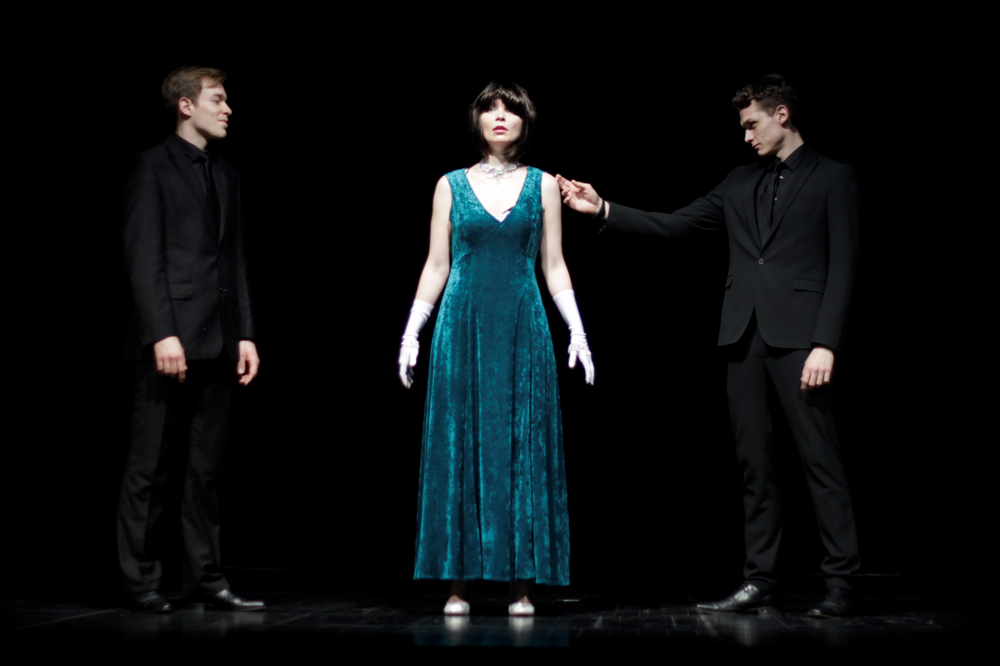

West Side Story
Warsaw Philharmonic
The Coronation of Poppea
The Academy of Dramatic Art in Warsaw
Sister Angelica
The Fryderyk Chopin University of Music Warsaw
Cantata
University of Warsaw
A Midsummer Night’s Dream
Grand Theatre-National Opera - Warsaw
La tabernera del puerto
Warsaw Philharmonic
Gallery
Gallery
×


 ❮
❯
❮
❯
1 / 8
Bernstein - West Side Story
Warsaw Philharmonic
2 / 8

Monteverdi - The Coronation of Poppea
The Academy of Dramatic Art in Warsaw
3 / 8
Puccini - Sister Angelica
The Fryderyk Chopin University of Music - Warsaw
4 / 8
Bach - Cantata
University of Warsaw
5 / 8
Britten - A Midsummer Night’s Dream
Grand Theatre-National Opera - Warsaw
6 / 8
Sorozabal - La tabernera del puerto
Warsaw Philharmonic
7 / 8
8 / 8